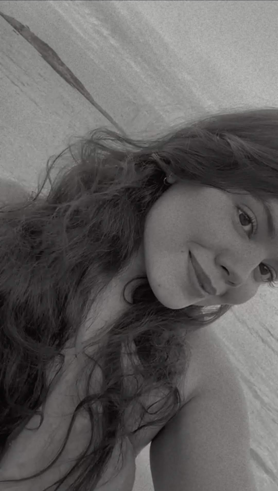
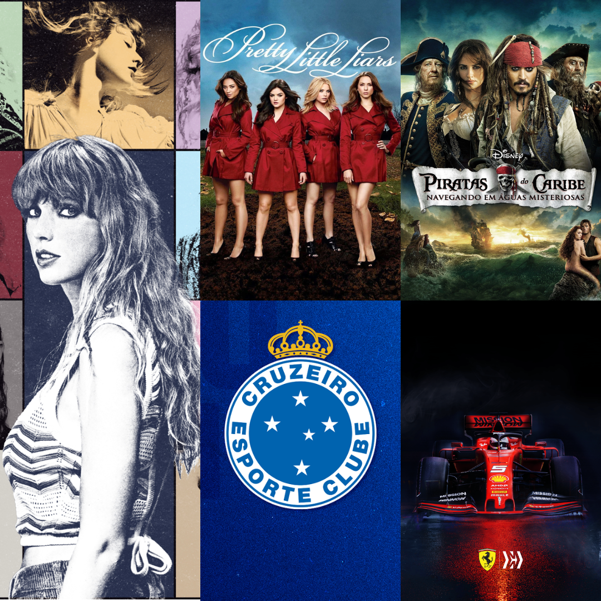
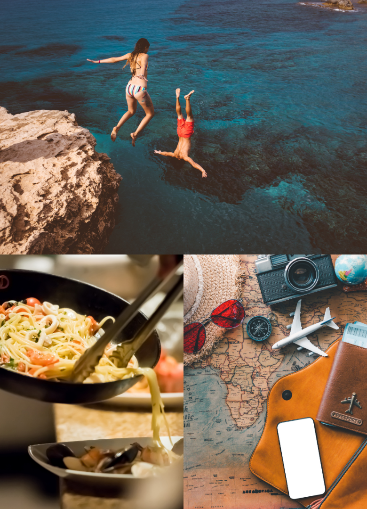

|  |
Sobre mimMinha HistóriaVenho de Carlos Chagas-MG e resido atualmente em Vila Velha - ES à cerca de 5 meses, onde escolhi para estudar e me encontrar no mercado de trabalho de TI. Sou solteira e não tenho filhos e vivo em busca de novas possibilidades.Objetivos ProfissionaisDesejo seguir na área de TI trabalhando de forma que me proporcione qualidade de vida com flexibilidade e trabalho remoto para que eu possa viajar e trabalhar em cada lugar do mundoHabilidades PessoaisTenho habilidades em criação de designs para mídia, falo inglês a alguns anos e estudo um pouco de Espanhol e Italiano. Habilidades com pacote office e meios tecnológicos, boa comunicação escrita e oral e criatividade.Vida AcadêmicaMe formei em 2018 no EM em Minas Gerais na E.E Geraldo De Souza Norte e estudei inglês por 5 anos no CCAA onde tenho certificado de inglês avançado. Participei de um projeto chamado de Meu primeiro negócio. Posteriomente comecei a cursar odontologia e concluí 2 períodos e atualmente sou estudante de Sistemas de Informação no 1º período da Universidade Vila Velha.Vida ProfissionalTrabalho atualmente com atendimento ao cliente em loja de varejo e anteriormente trabalhava como Social Media e também como secretária e professora de inglês no CCAA em Minas Gerais. |
|  | MúsicaMeu estilo de música favorito é o Rock e o Pop Taylor Swift é minha artista favoritaFilmes e SériesPiratas do Caribe como filme Pretty Little Liars como SériesEsportesCruzeiro é meu time de futebol F1 é meu esporte favorito - Ferrari's team |
 |
NadarNadar em praias e grandes piscinas me relaxam!CozinharCozinhar massas e receitas doces são meus tipos favoritos, acompanhados de uma boa bebida como um vinho ou uma cerveja!ViajarEstou sempre viajando e amo conhecer povos, culturas, culinária e lugares novos! |